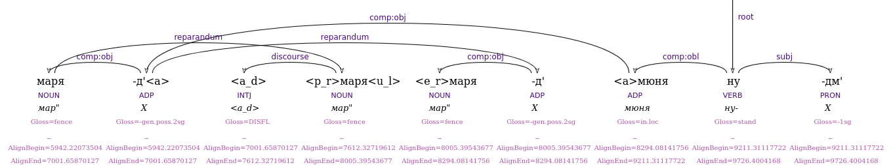
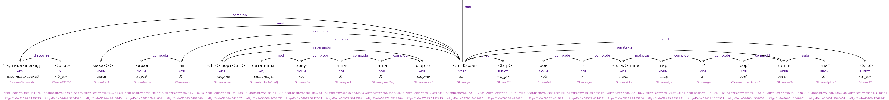

<n_n>= Non-linguistic noise (e.g., cough, laugh, sigh)<w_n>= Environmental/world noise (e.g., chatter, traffic, mic bump)
ID: lexical unit on its own
FORM: tag
LEMMA: tag
UPOS: X
DEPREL: noise, attached to the element it follows
Gloss: NOISE
Interruptions in the speaker's normal flow: errors, hesitations, restarts.
-
Disfluency
<a_d>= Audible disfluency (e.g., "uh", "erm")<a>= Articulatory lengthening (e.g., prolonged sound)
FORM: Tag or attached to lexeme

UPOS: INTJ / not relevant
DEPREL: discourse or not relevant
Gloss: DISFL / not relevant -
Cut-offs
<u_l>= Unfinished lexeme
FORM: Tag attached to lexeme
LEMMA: Full expected word
Gloss: not relevant -
False Start
<f_s>= False start
FORM:
<f_s>word
LEMMA: Base word
DEPREL: reparandum
Gloss: Gloss of base word -
Repetition
<e_r>= Exact repetition<p_r>= Partial repetition
FORM: Tag attached to lexeme
LEMMA: Base word
DEPREL: reparandum
Gloss: Gloss of base word
<m_l> = Merged lexemes
FORM: Lexemes separated; tag <m_l> precedes second word
DEPREL: As per syntax
Gloss: Gloss of lemma
<u_w> = Unusual word (incorrect word)
FORM: Tag attached to word
LEMMA: Lemma of incorrect word
DEPREL: As if correct
Gloss: Literal gloss

<s_p>= Silent pause<b_p>= Breathing pause
Structural: At clause boundaries, UPOS: PUNCT, DEPREL: punct
Disfluency-related: Inside phrases, UPOS: X, DEPREL: discourse